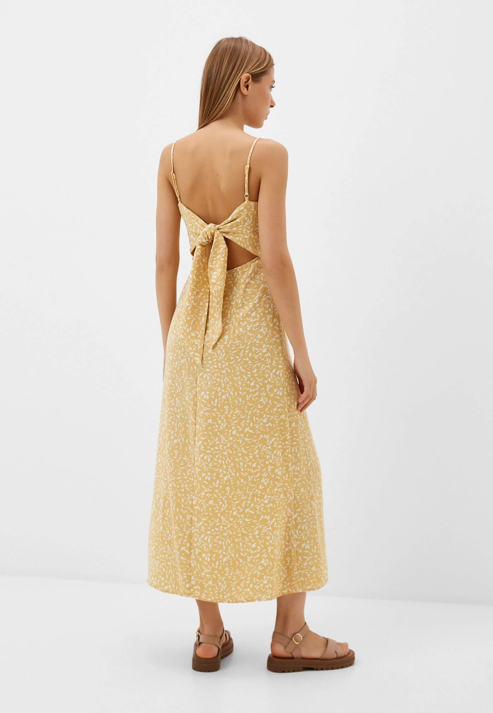

×

Женская рубашка — это стильный и универсальный предмет гардероба, который можно носить в самых разных ситуациях. Обычно она имеет пуговицы на передней части и воротник, может быть с длинными или короткими рукавами, и бывает из различных материалов, таких как хлопок, шелк, лен или полиэстер.
С чем носят женскую рубашку:
- Офисный стиль: С классическими брюками, юбками-карандашами или деловыми костюмами.
- Повседневный образ: С джинсами, шортами или леггинсами.
- Слоистые комплекты: Под свитерами, жилетами или жакетами.
- Летний образ: С шортами или легкими юбками, иногда с завязанными концами на талии.
Плюсы приобретения женской рубашки:
- Универсальность: Подходит для различных случаев — от офиса до повседневных мероприятий.
- Элегантность: Добавляет образу аккуратности и стиля, подчеркивая женственность.
- Комбинирование: Легко сочетается с различными элементами гардероба, создавая разнообразные образы.
- Удобство: Доступны модели из дышащих и комфортных материалов, что делает рубашку приятной в носке.
- Долговечность: Качественные рубашки из хороших материалов служат долго и сохраняют привлекательный вид после множества стирок.
Женская рубашка — это незаменимый элемент гардероба, который позволяет создавать как строгие деловые, так и расслабленные повседневные образы.